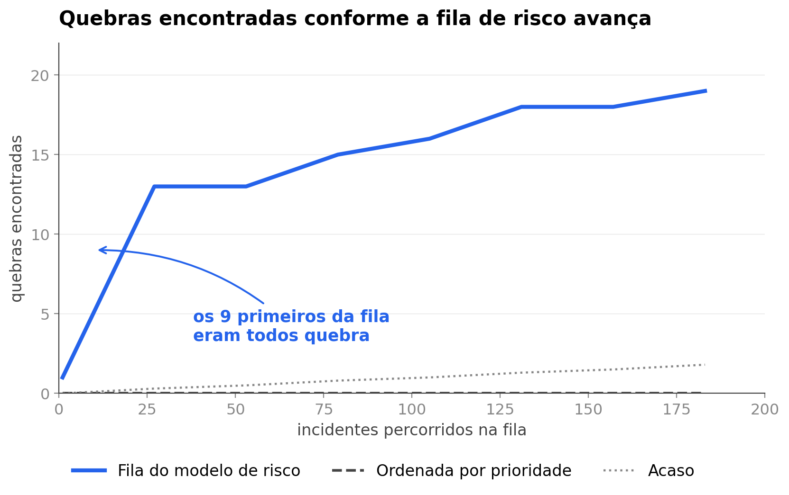

<style>
/* ═══ slide 8 · qual incidente quebra ════════════════════════════════════════
   O slide da regressão logística. Um assunto, um número.

   O fato que ele carrega é o mais fácil de explicar de todo o deck: os nove
   primeiros incidentes da fila eram todos quebra. Nove de nove. Não precisa de
   PR-AUC, nem de curva, nem de jargão nenhum, e é por isso que ele está aqui:
   o apresentador não trava numa pergunta que não saiba responder.

   A versão anterior tinha uma tabela comparando o modelo com a ordenação por
   prioridade e com o acaso. Ficou cheia e confusa, e o dono do projeto
   reprovou. A comparação está desenhada no gráfico, que é onde ela cabe.

   As posições das quebras na fila, de fila_curvas.json: 0, 1, 2, 3, 4, 5, 6,
   7, 8, 11, 16, 18, 20, 56, 60, 99 e adiante.
   ══════════════════════════════════════════════════════════════════════════ */
.fla .body{padding-top:14px}
.fla .tt{font-size:52px;letter-spacing:-1.9px}
.fla .fig{display:block;border-radius:10px}
.fla .quadro{padding:22px 26px}

.fla .nome{display:inline-flex;align-items:center;gap:11px;align-self:flex-start;
  padding:8px 16px 8px 13px;border-radius:999px;background:var(--accent-l);
  border:1px solid #C9DCFB;margin-bottom:26px}
.fla .nome .ic{width:19px;height:19px;color:var(--accent)}
.fla .nome span{font-family:var(--mono);font-size:14px;font-weight:500;
  letter-spacing:.3px;color:var(--accent)}

.fla .bat{display:flex;align-items:baseline;gap:22px}
.fla .bat .v{font-weight:900;line-height:.82;color:var(--accent);
  font-variant-numeric:tabular-nums}
.fla .bat .k{font-size:19px;line-height:1.4;color:var(--tx)}
.fla .bat .k b{color:var(--head);font-weight:700}

/* ── variação A · figura à esquerda, o número à direita ── */
.fl-a .cena{flex:1;display:flex;align-items:center;gap:52px;margin-top:20px;
  min-height:0}
.fl-a .quadro{flex-shrink:0}
.fl-a .fig{width:880px}
.fl-a .lado{flex:1;min-width:0;display:flex;flex-direction:column}
.fl-a .bat{flex-direction:column;gap:18px}
.fl-a .bat .v{font-size:194px;letter-spacing:-8px}
.fl-a .bat .k{max-width:330px}

/* ── variação B · o número em cima, figura em largura cheia embaixo ── */
.fl-b .cena{flex:1;display:flex;flex-direction:column;align-items:center;
  justify-content:center;gap:26px;margin-top:14px;min-height:0}
.fl-b .topo{width:900px;display:flex;align-items:flex-end;
  justify-content:space-between;gap:40px}
.fl-b .bat .v{font-size:104px;letter-spacing:-4.2px}
.fl-b .bat .k{max-width:420px}
.fl-b .nome{margin-bottom:0}
.fl-b .fig{width:900px}
</style>

<section class="slide light fla fl-a" data-slide="8" data-var="a" data-quem="ana">
  <div class="mesh"></div><div class="grid-bg"></div>
  <div class="hd">
    <div class="bi"><svg viewBox="0 0 28 28" fill="none"><path d="M6 22L12 14L16 17L22 8" stroke="#fff" stroke-width="2.2" stroke-linecap="round" stroke-linejoin="round"/><circle cx="22" cy="8" r="3" stroke="#3B82F6" stroke-width="1.5"/><circle cx="22" cy="8" r="1.2" fill="#3B82F6"/></svg></div>
    <div class="bn">Cronos</div><span class="bt">BANCA FINAL &middot; 15/09/2026</span>
    <div class="tag">Base de avaliação &middot; 5.183 incidentes</div>
  </div>
  <div class="body">
    <span class="eb"><span class="rv" style="--d:240ms">Regressão logística &middot; a fila de risco</span></span>
    <h1 class="tt"><span class="mask" style="--d:340ms"><span>Qual incidente quebra</span></span></h1>

    <div class="cena">
      <div class="quadro cartao rv3" style="--d:620ms">
        
      </div>

      <div class="lado">
        <span class="nome rv" style="--d:900ms">
          <svg class="ic" viewBox="0 0 24 24"><path d="M4 6h16M4 12h16M4 18h9"/></svg>
          <span>A fila ordenada por risco</span>
        </span>
        <div class="bat rv3" style="--d:1060ms">
          <span class="v"><span class="ct" data-to="9" data-delay="1280">0</span></span>
          <span class="k">primeiros incidentes da fila <b>eram todos quebra</b> de prazo</span>
        </div>
      </div>
    </div>
  </div>
  <div class="ft"></div>
</section>

<section class="slide light fla fl-b" data-slide="8" data-var="b" data-quem="ana">
  <div class="mesh"></div><div class="grid-bg"></div>
  <div class="hd">
    <div class="bi"><svg viewBox="0 0 28 28" fill="none"><path d="M6 22L12 14L16 17L22 8" stroke="#fff" stroke-width="2.2" stroke-linecap="round" stroke-linejoin="round"/><circle cx="22" cy="8" r="3" stroke="#3B82F6" stroke-width="1.5"/><circle cx="22" cy="8" r="1.2" fill="#3B82F6"/></svg></div>
    <div class="bn">Cronos</div><span class="bt">BANCA FINAL &middot; 15/09/2026</span>
    <div class="tag">Base de avaliação &middot; 5.183 incidentes</div>
  </div>
  <div class="body">
    <span class="eb"><span class="rv" style="--d:240ms">Regressão logística &middot; a fila de risco</span></span>
    <h1 class="tt"><span class="mask" style="--d:340ms"><span>Qual incidente quebra</span></span></h1>

    <div class="cena">
      <div class="topo">
        <div class="bat rv3" style="--d:640ms">
          <span class="v"><span class="ct" data-to="9" data-delay="860">0</span></span>
          <span class="k">primeiros incidentes da fila <b>eram todos quebra</b> de prazo</span>
        </div>
        <span class="nome rv" style="--d:1000ms">
          <svg class="ic" viewBox="0 0 24 24"><path d="M4 6h16M4 12h16M4 18h9"/></svg>
          <span>A fila ordenada por risco</span>
        </span>
      </div>

      <div class="quadro cartao rv3" style="--d:1180ms">
        
      </div>
    </div>
  </div>
  <div class="ft"></div>
</section>
